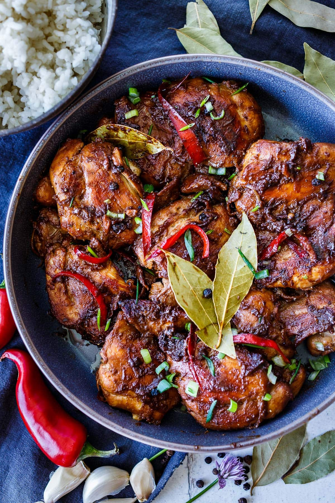

Filipino Chicken Adobo

Description:
This Filipino Chicken Adobo made with soy sauce, vinegar, and some
aromatics, is hands down one of the most popular dishes in Philippines!
Ingredients:
- 2 tablespooons oil
- 3 pound chicken, cut into pieces
- 1 onion
- 2 tablespoons minced garlic
- 2/3 cup low sodium soy sauce
- 1/3 cup white vinegar
- 2 tablespoons black pepper
- 1 bay leaf
Steps:
- Heat oil in a large skillet over medium-high flame. Cook chicken pieces
until golden brown, about 2 to 3 minutes per side. Remove from the pan, and set aside.
- Saute onion and garlic until brown.
- Pour in soy sauce and vinegar. Add black pepper and bay leaf.
- Return chicken to a pan, increase heat to high, and bring to a boil.
Reduce heat to medium-low. Cover, and simmer until chicken is tender,
about 35 to 40 minutes.
- Serve and enjoy!
Steps:
- Prepare the green chilis. Slice lenghtwise, remove the seeds and the white
part that holds the stem. Wash with cold water.
- Prepare the filling. In a bowl, add the ground pork, salt, white pepper
powder, onion powder, and garlic powder. Mix well. Slice the cheese into
desired thickness.
- Assemble the dynamite. Stuff the chilis with cheese. Add the meat filling.
Wrap the chilis with lumpia wrapper with the stem outside.
- Heat oil under medium low flame. Cook the dynamite for about 3-4 minutes.
Do not overcrowd the pan. Serve with your favorite dip sauce.